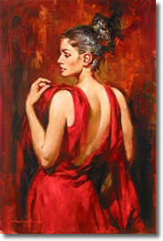
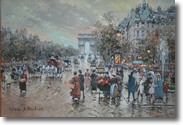
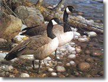
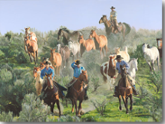
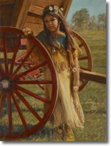

Browse Artists/Descriptions:
 Andrew Atroshenko
Andrew Atroshenko was born in 1965 in the city of Pokrovsk. "Music and art consume my life. There is a symphony in everything I paint." View Artwork
Antoine Blanchard
(1910-1988) Like his contemporary, Édouard Cortès, he devoted his artistic career to the depiction of Paris through all its daily and seasonal changes. But he was not an imitator of Cortes, but rather depicted the life of Paris at the turn of the century from his own point of view. View Artwork
Carl Brenders
The wildlife images of Brenders' art are first created from pencil sketches; from these sketches his mixed media paintings of watercolor and gouache are completed with a technique he has developed during the last 25 years. His paintings, encompassing every intricacy of nature, devote equal attention to the detail of the wildlife subject and its habitat as well as to the mood created by the light.View Artwork
John Bye
John Bye's high-definition paintings have amazing detail. His portrayals of cowboys, horses and wildlife show skill, patience and talent. John is an invited participant in the Masters of the American West annual show at the Autry Museum.View Artwork
Judee Dickinson
Award-winning artist Judee Dickinson strives to bring emotion and character to her portraits of native Americans and the people of the West. As a skilled portrait artist Judith has been commissioned for many portraits including the official portrait of the Governor of Colorado.View Artwork